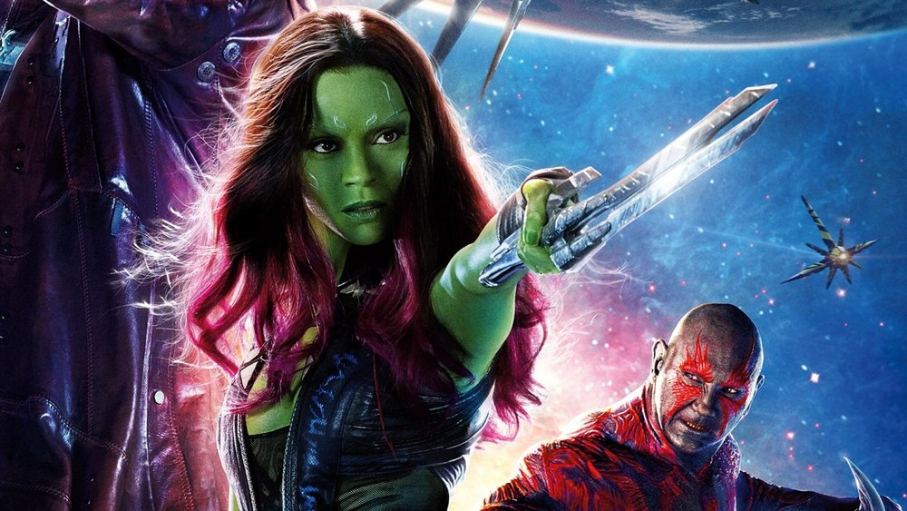

Gamora was a former assassin and a member of the Guardians of the Galaxy. She became the adopted daughter of Thanos after he killed half of her race, the Zehoberei. She served him for years before betraying him in an attempt to free herself from his ways. She was hired to steal the Orb, and became caught up in the Quest for the Orb, becoming friends with the other members of the Guardians of the Galaxy. After the Battle of Xandar, she left to work with them all. Having made a deal with the Sovereign to kill the Abilisk, Gamora was able to take back custody of her fugitive sister Nebula with the intention of finally bringing her to justice in Xandar. The mission to punish Nebula was delayed however when Gamora and the Guardians came into contact with Ego, the long lost father of Star-Lord. While Ego claimed to just want to bond with his son, Gamora was suspicious and, alongside Nebula who had freed herself, discovered Ego's evil intentions to destroy and rebuild the universe. Upon this discovery, the Guardians teamed up to destroy the living planet, succeeding with the help from Mantis, who joined the group, but at the cost of Yondu Udonta sacrificing his life. After Udonta's death, Gamora finally confessed that she had romantic feelings to Star-Lord and started a relationship with him. Years later, Gamora and the Guardians intercepted a distress call sent by the Asgardian Thor warning them that Thanos had begun searching for the Infinity Stones himself. Realizing what he intended to do with them, Gamora led her friends to Knowhere to procure the Aether, only for both it and Gamora to be captured by Thanos himself. Thanos took Gamora to Vormir, where he heart-breakingly sacrificed her against her will in order to obtain the Soul Stone, a process that trapped Gamora's soul inside the Soulworld.
When Gamora was very young, the interplanetary warlord Thanos killed half of her species, the Zehoberei. Although she and her mother attempted to hide, they were quickly found by Thanos' soldiers and taken out to the spotlight. Gamora fought off the soldier restraining her, an act that Thanos himself saw, which earned her the Titan's interest in her. He took her aside and taught her his beliefs on balance by symbolizing it with balancing a knife on his finger and asked her to do the same. Massacre of the Zehoberei Gamora is adopted by the Mad Titan, Thanos When his soldiers began the massacre, Gamora turned and almost saw her people being massacred. However, Thanos turned her attention back onto the knife and complimented her when she finally balanced the dagger. While her parents were among those killed, Thanos spared and raised her as his own child.[1] Deadliest Woman in the Galaxy "I go by many names, Earthian, but I'm sure the one that most know me by is Gamora, the deadliest woman in the whole galaxy." ―Gamora[src] As Gamora grew older, Thanos cybernetically altered her body, trying to transform her into the ultimate weapon. Gamora trained under the tutelage of Ronan the Accuser as a galaxy-class killer alongside Korath and the Luphomoid known as Nebula. Unlike the rest of Thanos' adopted children in the Black Order, Gamora and Nebula actually did consider each other sisters and both shared great enmity towards Thanos for destroying their childhoods. Despite their closeness, Thanos had Nebula and Gamora regularly spar against each other with Gamora winning every match. In response, Thanos would 'upgrade' Nebula every time she lost against Gamora in order for her to "be her equal". The consistent and brutal "upgrades" caused Nebula to grow to resent her sister. Upon reaching adulthood, Gamora and Nebula sought the powerful item known as the Orb for Thanos under the command of Korath the Pursuer. On the planet Praxius IX, while following a false lead on the Orb, Nebula found herself ensnared by an impenetrable Laser Thorn Energy Net. Under Thanos' orders, Gamora left Nebula behind, leaving her only a large knife with which to cut herself out of the netting. The experience drove a great wedge between the two sisters, and also strengthened Gamora's bitterness towards Thanos. As the years passed, Gamora's skills earned her Thanos' favoritism, which only proved to strengthen the growing wedge in her relationship with Nebula. In time, Gamora built up the reputation as the "deadliest woman in the galaxy" and became well known throughout the cosmos.[2]